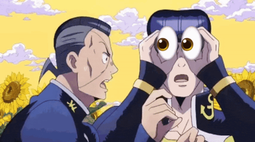

Meu nome é Rafaeljqo, estou cursando TI, gosto muito de jogos e pretendo criar os meus, mas até agora minhas tentativas foram extremamente falhas e iniciantes. Os melhores jogos que eu fiz estão no roblox... Pretendo aprender GML.
Também gosto muito de arte e quero aprender a desenhar e tocar algum instrumento, mas tenho preguiça e vergonha.
Outra coisa que eu quero fazer é um canal no youtube, mas eu tenho preguiça de pensar em roteiro, gravar minha voz falando o que tem no roteiro, editar o vídeo e postar..
Eu não sei o que colocar num site meu, aí vai um gif de JoJo's Bizzare Adventures porque eu gosto muito de JoJo's Bizzare Adventures

👀👀👀👀👀👀👀👀👀👀👀
Data:01/10/2026